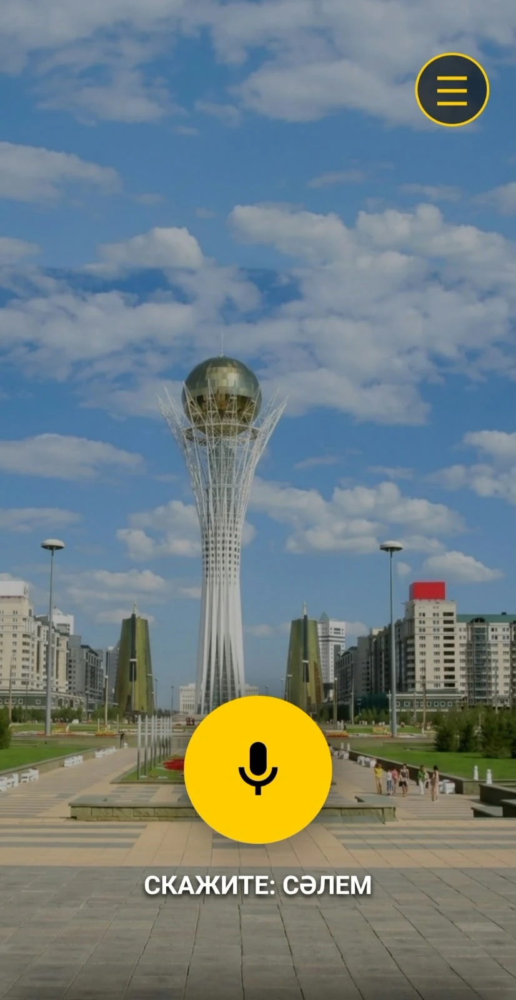
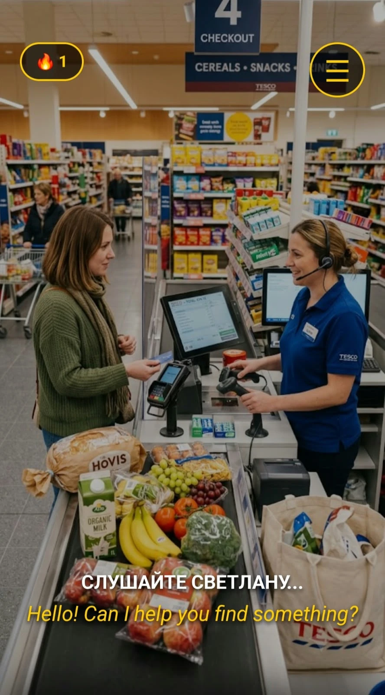
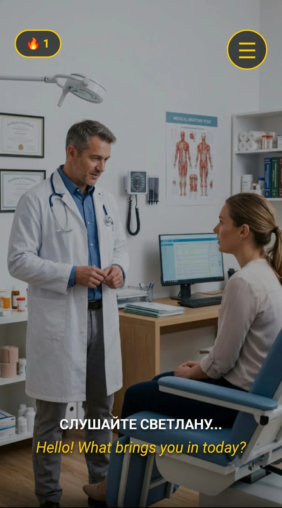
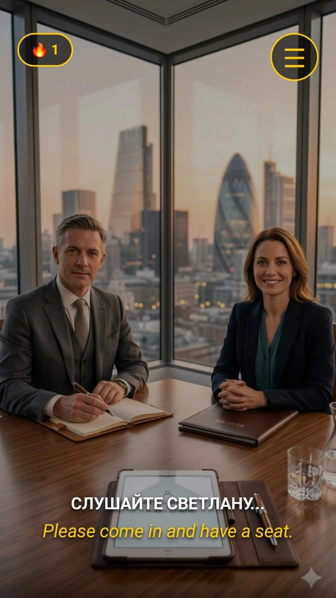
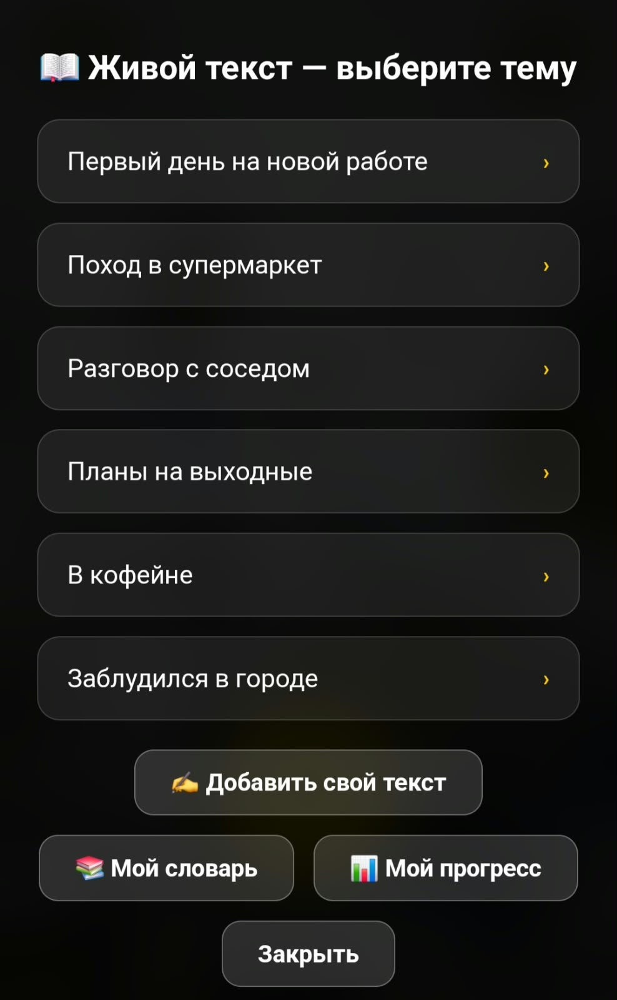
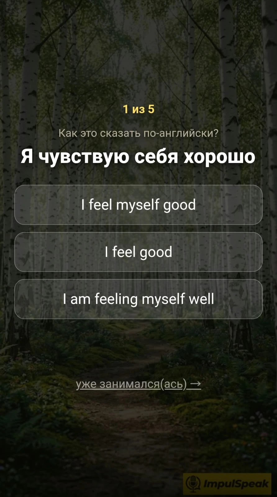

ImpulSpeak
Голосовая образовательная платформа с AI-репетитором Светланой (английский и казахский курсы).
FastAPIGemini APIWhisperedge-ttsSQLiteVoskJavaScriptLinuxCaddyGitHub ActionsHetzner
Задача
- Дать человеку практику живого разговора на иностранном языке без репетитора.
- Объединить распознавание речи, ИИ-диалог и естественную озвучку в едином потоковом конвейере.
- Обеспечить качественное распознавание казахской речи, с которой не справляются мировые модели.
Решение
- Backend-архитектура с нуля на FastAPI с REST API для голосовых сценариев.
- Vosk (офлайн STT) для казахского языка, Whisper для английского, Gemini для логики диалога, edge-tts для голоса.
- Хранение профилей и истории прогресса в SQLite с ежечасными бэкапами.
- Клиентский PWA-интерфейс с поддержкой добавления на экран смартфонов iOS и Android.
Результат
- Работающий сервис impulspeak.com: интерактивные сценарии (аэропорт, банк, собеседование).
- Перенос с Google Cloud на Hetzner: серверные расходы сокращены в 4 раза (с ~$20 до ~€4/мес) при 100% аптайме.
- Сравнение моделей: казахская модель Vosk распознала 9 из 9 фраз, в то время как облачный Whisper дал 0 из 9.
- Двойной мониторинг: локальный сторож раз в 5 минут с автовосстановлением и ботом в Telegram + проверка на GitHub Actions.





